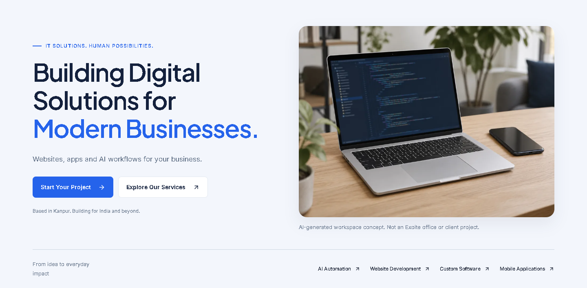
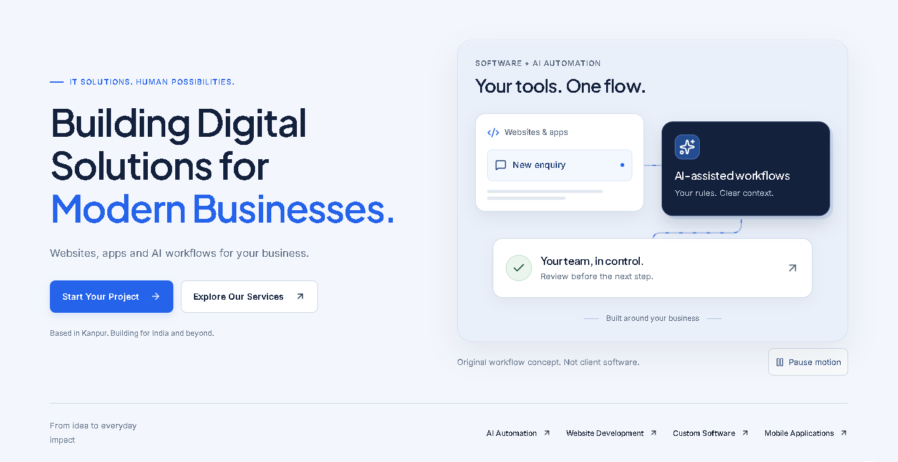
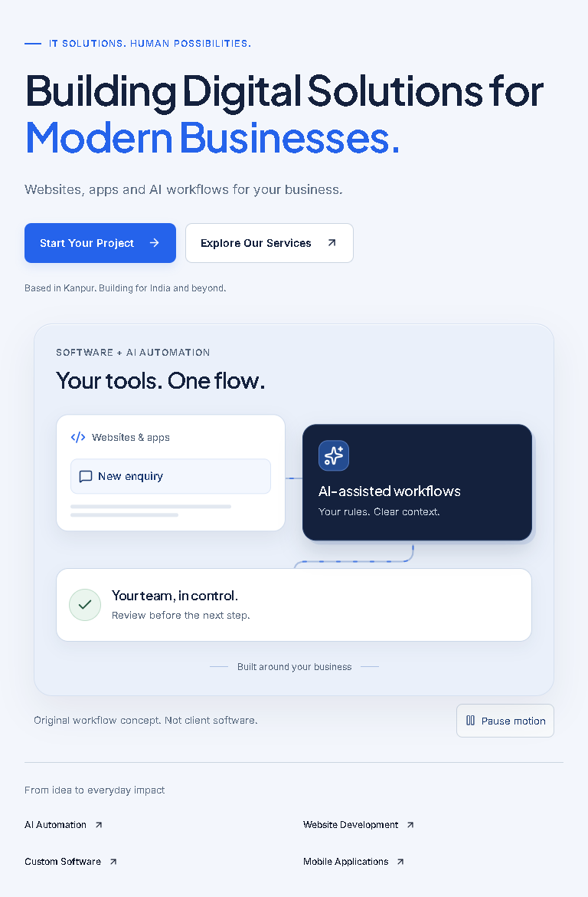

Homepage hero: premium vector and motion
Task 1B. Actual local production-preview renders in installed Google Chrome. Headline and CTA destinations are preserved; only the hero was refined. The artwork is an original capability concept, not client software.
Final report89 focused browser checksScope verification
1440px desktop




Opening viewportReduced motionCTA hoverBefore full pageAfter full page


768px tablet



Opening viewportReduced motionBefore full pageAfter full page


390px mobile


Opening viewportReduced motionNo JavaScriptBefore full pageAfter full page
Original unretouched PNGs. Main after captures show ordinary-motion mode; static reduced-motion captures are supplied separately. PNGs cannot show movement: actual transform, connector, pause and resume samples are recorded in the browser results. Capture contexts are separate from interaction contexts to avoid altering animation state during testing. Viewport height: 900px; device scale: 1.